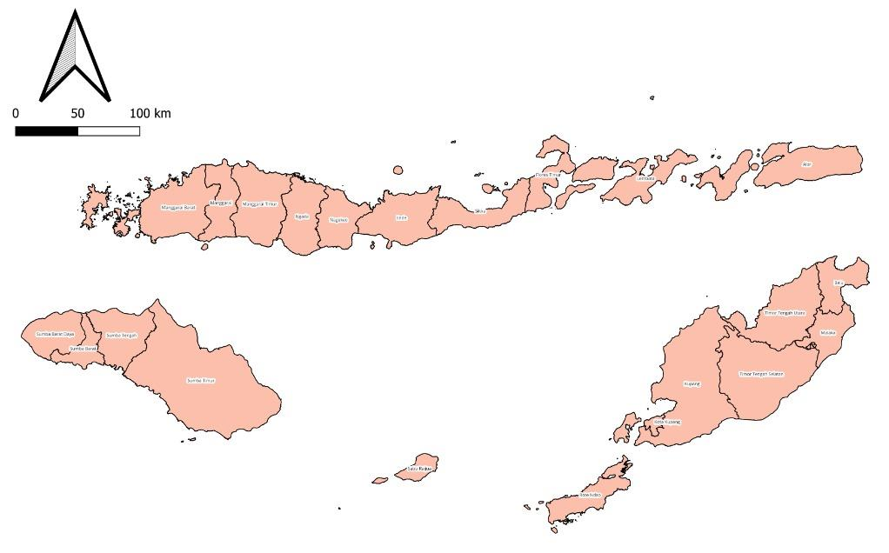

Estimasi Indeks Pembangunan Manusia Tingkat Kecamatan Menggunakan Data Geospasial Dengan Metode Machine Learning Di Provinsi Nusa Tenggara Timur
Kerangka Kebijakan Nasional
RENCANA PEMBANGUNAN JANGKA MENENGAH NASIONAL 2020-2024
Dokumen resmi acuan arah kebijakan fiskal, sektoral, dan regional pembangunan Indonesia.
IPM Resmi Nasional Badan Pusat Statistik
Namun, IPM Nasional pada tahun 2024 sebesar 75,02 (belum mencapai target RPJMN), menunjukkan bahwa capaian kinerja pemerintah terkait program pembangunan manusia masih belum maksimal.
Pentingnya estimasi nilai IPM pada tingkat wilayah yang lebih kecil, seperti kecamatan guna mendukung perencanaan, pelaksanaan, pemantauan, dan evaluasi program pembangunan manusia yang lebih efektif.
Sumber Data dan Metode yang Digunakan
SUSENAS
Sumber data utama penghitungan IPM oleh BPS.
Keterbatasan Susenas
Keterbatasan Metode Statistik Konvensional
Metode statistik konvensional dianggap kurang fleksibel dan perlu memenuhi beberapa asumsi tertentu dalam pemodelan estimasi.
Data Geospasial
Metode Machine Learning
Metode machine learning lebih fleksibel dan tidak memerlukan banyak asumsi dalam pembangunan model estimasi.
Provinsi Nusa Tenggara Timur

Provinsi NTT memiliki nilai capaian IPM provinsi sebesar 67,39 yang merupakan terendah keempat nasional dan terendah pertama di luar pulau Papua pada tahun 2024.
Penelitian oleh Syaifullah dan Sari (2025) yang mengungkap adanya tantangan serius dalam peningkatan kualitas hidup masyarakat pada berbagai dimensi pembangunan manusia seperti aspek kesehatan, aspek pendidikan, dan standar hidup yang layak di provinsi Nusa Tenggara Timur (NTT) sejak tahun 2020–2024.
Oleh sebab itu, provinsi NTT dipilih sebagai lokus penelitian.
Batasan Penelitian
Data yang digunakan adalah data geospasial dan statistik resmi yang sumbernya di luar Susenas.
Metode yang digunakan dibatasi pada machine learning, tanpa membandingkan dengan metode penghitungan IPM resmi oleh BPS atau metode statistik konvensional lain.
Evaluasi model estimasi hanya dapat dilakukan pada data tingkat kabupaten/kota karena keterbatasan data IPM resmi pada tingkat kecamatan.
Berdasarkan latar belakang dan identifikasi masalah yang telah diuraikan, penelitian ini memiliki beberapa tujuan yang ingin dicapai yaitu sebagai berikut:
Menggunakan data geospasial dan statistik resmi untuk mengestimasi IPM tingkat kecamatan di provinsi NTT.
Mengevaluasi dan menggunakan model machine learning terbaik untuk mengestimasi IPM tingkat kecamatan di provinsi NTT.
Memetakan hasil estimasi IPM tingkat kecamatan di provinsi NTT dengan dashboard web map.